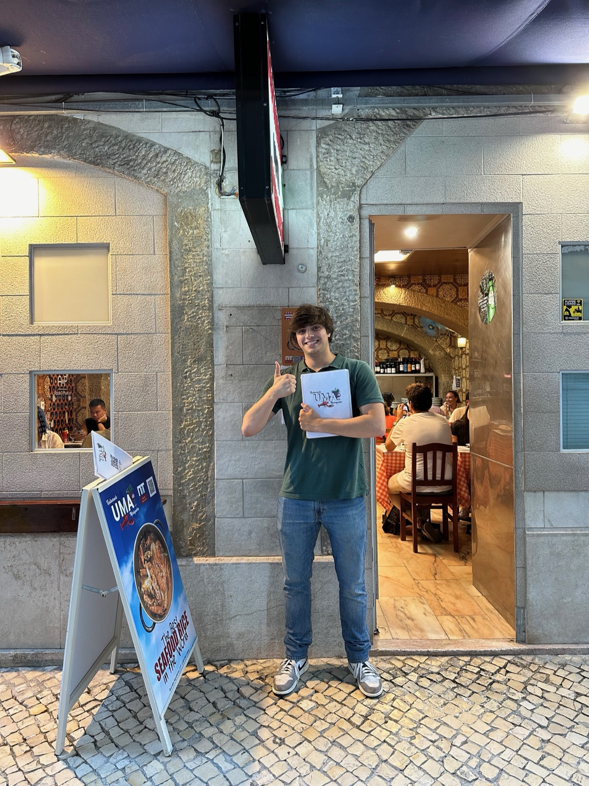

Project / Waterfront + Public Space
Coastal Play Terrace

Coastal Play Terrace transforms a hard waterfront edge into a stepped civic landscape where children can climb, adults can rest, and everyone can stay close to the sea without losing a sense of safety.
Context
The existing seawall was efficient but emotionally thin. People stopped briefly for views, yet the space offered little support for longer visits, especially for families and older adults.
The project looked at how handrails, seating ledges, textured ramps, and climbing surfaces could produce a more inclusive shoreline without introducing fenced-off play equipment.
Design logic
The terrace uses section as its main tool. Small level changes create rooms for sitting, leaning, and informal play while maintaining visual openness to the water. Drainage, safety, and comfort are integrated into the geometry rather than added later.
By avoiding one dominant object, the waterfront remains calm and flexible. Users can define their own pace and degree of engagement.


Public value
The project broadens the meaning of play. It is not a separate activity zone, but a way of making the whole waterfront more approachable, flexible, and socially mixed.
That shift is subtle, but important. The coastline reads less like infrastructure and more like a shared civic terrace.